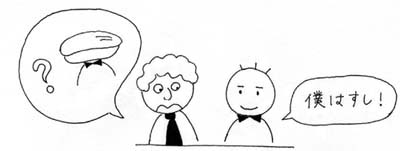

Článek vychází z poznatků v první části.
| Nani ni nasaimasu ka. 何になさいますか。 | Co byste si přál? |
| Go-čúmon wa okimaridesu ka. ご注文はお決まりですか。 | Rozhodl jste se, co si přejete objednat? |
| Okimaridesu ka. お決まりですか。 | Už jste si vybral? |
| Go-čúmon wa. ご注文は。 (méně zdvořilé) | Co byste si přál? |
Tyto výrazy jsou zdvořilé. Zdvořilost je tvořena částicemi "Go" a "O".
| Suši すし | (o) onegaišimasu. （を）お願いします。 |
| -//- | o kudasai. をください。 |
| -//- | o moraimasu. をもらいます。 |
| -//- | ni šimasu. にします。 |
Pokud si vyberete jednu z těchto variant, použijete sloveso "suru(šimasu)". V tomto případě znamená "vybrat si".
V úvodním dialogu se vyskytuje "Boku wa suši" technicky to znamená "Jsem suši". Každopádně ze situace vyplývá, že si Ičiró objednává suši. Částice "wa" se dá přeložit jako "pokud jde o mě ~".
| Boku wa suši. 僕はすし。 | Pokud jde o mě, dám si suši. |
| Wataši wa bíru. 私はビール。 | Dám si pivo. |

| < | ^ | > |